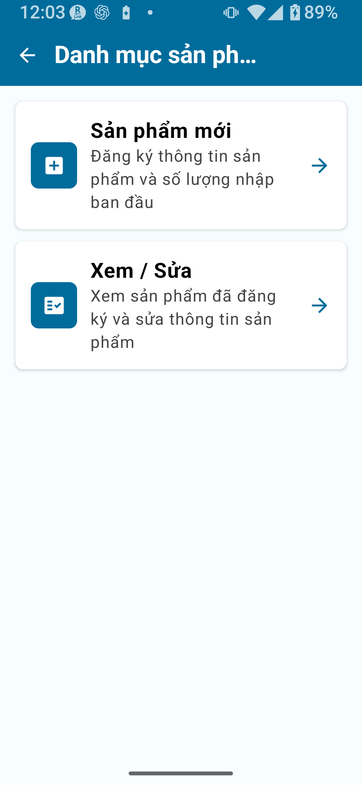
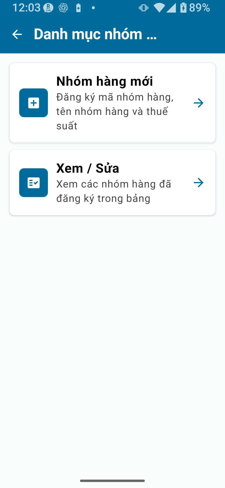
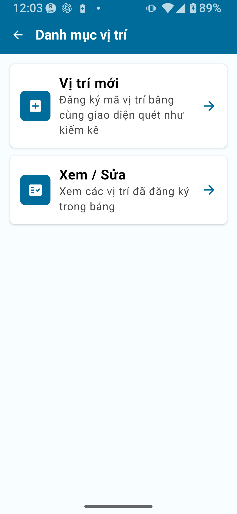
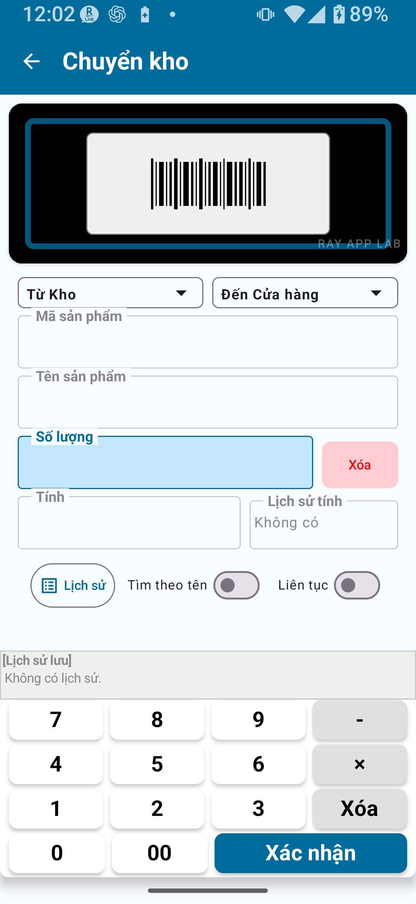
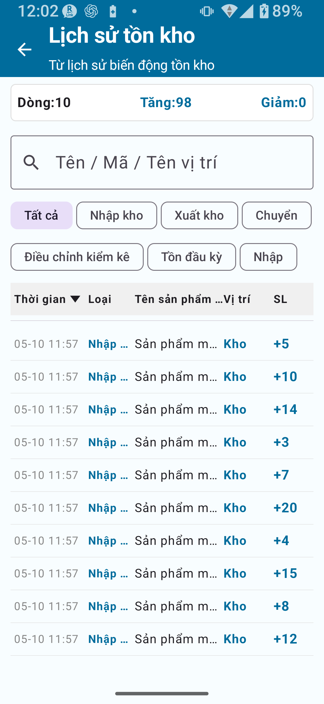
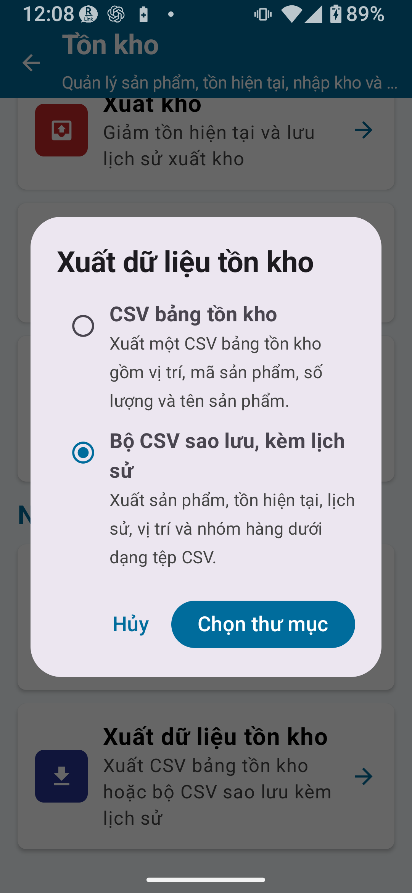

Các tính năng của Gói đầy đủ · Quản lý dữ liệu danh mục · Chuyển kho · Áp dụng kiểm kê · Sao lưu CSV · Quy trình thực tế
Chủ đề trong tài liệu này:
Các tính năng của Mở khóa tồn kho đầy đủ / Khác biệt so với Gói tiêu chuẩn / Tích hợp Danh mục sản phẩm / Danh mục loại hàng / Danh mục vị trí / Chuyển kho / Lịch sử tồn kho / Áp dụng dữ liệu kiểm kê vào tồn kho / Sao lưu & Phục hồi CSV / Sao lưu lịch sử / Ngưỡng bổ sung hàng & giá / Ví dụ quy trình Gói đầy đủ / Lưu ý quan trọng
CHAPTER 1
Tổng quan Gói đầy đủ (Mở khóa đầy đủ)
Mở khóa tồn kho đầy đủ bỏ tất cả giới hạn về số bản ghi danh mục, mục lịch sử và hàng xuất, đồng thời kích hoạt mọi tính năng nâng cao không có trong Gói tiêu chuẩn. Các bổ sung chính gồm quản lý đa vị trí (kho, cửa hàng, v.v.), chuyển kho giữa các vị trí, áp dụng kết quả kiểm kê trực tiếp vào tồn kho, và sao lưu & phục hồi CSV đầy đủ.
Tính năng được mở khóa bởi Mở khóa đầy đủ
Không giới hạn bản ghi danh mục, mục lịch sử hoặc hàng xuất
Trường ngưỡng bổ sung hàng và giá trong Danh mục sản phẩm
Quy tắc mã, quy tắc vị trí và cài đặt quét camera (cài đặt đầy đủ dùng chung)
Tùy chọn CSV mở rộng (chọn cột và chọn chế độ nhập)
Lưu ý: "Mở khóa đầy đủ" và "Gói đầy đủ" có nghĩa giống nhau
Trong tài liệu này, "Mở khóa đầy đủ" và "Gói đầy đủ" được dùng thay thế nhau. Để biết chi tiết mua và gói, xem phần "Gói thanh toán" trong ① Màn hình chính & Cài đặt.
CHAPTER 2
Khác biệt so với Gói tiêu chuẩn
Bảng dưới tóm tắt các tính năng được thêm so với Gói tiêu chuẩn (Mở khóa tiêu chuẩn).
Tính năng
Gói miễn phí
Gói tiêu chuẩn
Gói đầy đủ
Kiểm tra tồn kho
✓
✓
✓
Nhập hàng (Nhập kho) / Xuất hàng (Xuất kho)
✗
✓
✓
Giới hạn bản ghi danh mục
30
300
Không giới hạn
Chuyển kho
✗
✗
✓
Áp dụng dữ liệu kiểm kê vào tồn kho
✗
✗
✓
Danh mục loại hàng
✗
✗
✓
Ngưỡng bổ sung hàng & giá
✗
✗
✓
Sao lưu & Phục hồi CSV
✗
Giới hạn
✓ (bộ đầy đủ)
Sao lưu lịch sử
✗
✗
✓
Quy tắc mã & vị trí
✗
✗
✓ (cài đặt đầy đủ dùng chung)
MẹoĐể biết các thao tác cốt lõi trong Gói tiêu chuẩn — Nhập hàng, Xuất hàng, Kiểm tra tồn kho, Lịch sử tồn kho và Nhập/Xuất CSV — xem ⑥ Quản lý Tồn kho: Gói tiêu chuẩn. Trang này chỉ đề cập các tính năng được thêm trong Gói đầy đủ.
CHAPTER 3
Tích hợp Danh mục sản phẩm
Danh mục sản phẩm là nơi bạn đăng ký các sản phẩm thực tế mà bạn quản lý tồn kho. Với Mở khóa đầy đủ, bạn có thể thêm ngưỡng bổ sung hàng và giá vào mỗi sản phẩm.
Các trường chính trong Danh mục sản phẩm
Trường
Mô tả
Được thêm trong Gói đầy đủ
Mã sản phẩm / Mã vạch
Mã định danh duy nhất cho sản phẩm
—
Tên sản phẩm
Tên của sản phẩm
—
Loại hàng
Phân loại sản phẩm (chọn từ Danh mục loại hàng)
—
Giá
Giá bán hoặc giá vốn của sản phẩm
✓
Ngưỡng bổ sung hàng
Ngưỡng tham khảo để xem xét bổ sung hàng khi tồn kho xuống thấp
✓

Màn hình Danh mục sản phẩm (Gói đầy đủ)
Đăng ký hoặc chỉnh sửa sản phẩm
Mở Quản lý danh mục từ màn hình chính.
Chọn Danh mục sản phẩm.
Nhấn thẻ mục mới hoặc nút Mới.
Nhập mã sản phẩm, tên sản phẩm và loại hàng. Tùy chọn nhập giá và ngưỡng bổ sung hàng.
Nhấn Lưu để đăng ký.
Để chỉnh sửa sản phẩm hiện có, mở hàng đó trong danh sách, thực hiện thay đổi và nhấn Lưu.
Đăng ký sản phẩm chưa nhận dạng từ màn hình Nhập hàng
Nếu nhập mã sản phẩm chưa có trong danh mục trên màn hình Nhập hàng, ứng dụng sẽ đưa bạn đến biểu mẫu mục mới Danh mục sản phẩm. Sau khi lưu tên sản phẩm, giá và ngưỡng bổ sung hàng, bạn được đưa trở lại màn hình Nhập hàng và chi tiết sản phẩm được điền tự động.
Lưu ý: Đừng nhầm lẫn Sản phẩm với Loại hàng
Sản phẩm: Mặt hàng riêng lẻ bạn lưu giữ trong kho (ví dụ: Bút đỏ, Bút xanh)
Loại hàng: Nhóm phân loại cho sản phẩm (ví dụ: Văn phòng phẩm, Thực phẩm)
Loại hàng được chọn trong Danh mục sản phẩm làm phân loại của sản phẩm. Bản thân loại hàng không lưu giữ tồn kho.
CHAPTER 4
Danh mục loại hàng
Danh mục loại hàng quản lý các nhóm phân loại dùng để tổ chức sản phẩm của bạn. Danh mục giúp lọc và xem lại Danh mục sản phẩm dễ hơn.
Các trường chính trong Danh mục loại hàng
Trường
Mô tả
Mã loại hàng
Mã định danh duy nhất cho loại hàng
Tên loại hàng
Tên phân loại (ví dụ: Thực phẩm, Quần áo)
Phân loại
Nhóm dùng để tổ chức sản phẩm trong danh sách và danh mục
Thứ tự hiển thị
Thứ tự sắp xếp trong chế độ xem danh sách

Màn hình Danh mục loại hàng (Gói đầy đủ)
Mẹo: Danh mụcDùng danh mục nhất quán để nhóm sản phẩm và kiểm tra danh mục dễ hơn.
Đăng ký loại hàng
Vào Quản lý danh mục → Danh mục loại hàng.
Nhấn thẻ mục mới hoặc nút Mới.
Nhập mã loại hàng, tên loại hàng và thứ tự hiển thị.
Nhấn Lưu.
CHAPTER 5
Danh mục vị trí
Danh mục vị trí là nơi bạn đăng ký và quản lý các địa điểm vật lý lưu trữ hàng tồn kho. Bằng cách đăng ký nhiều vị trí — như kho, sàn bán lẻ hoặc các kệ riêng lẻ — bạn có thể theo dõi tồn kho theo từng vị trí.
Các trường chính trong Danh mục vị trí
Trường
Mô tả
Mã vị trí
Mã định danh duy nhất cho vị trí
Tên vị trí
Tên vị trí (ví dụ: Kho, Cửa hàng A)
Thứ tự hiển thị
Thứ tự sắp xếp trong chế độ xem danh sách
Tính vào kiểm tra nhu cầu bổ sung
Khi bật, tồn kho của vị trí này được tính vào tổng dùng cho quyết định bổ sung hàng trên màn hình Kiểm tra tồn kho
Hoạt động / Không hoạt động
Các vị trí không còn dùng có thể bị hủy kích hoạt mà không xóa

Màn hình Danh mục vị trí (Gói đầy đủ)
Vị trí mặc định
Ứng dụng đi kèm với "Kho" và "Cửa hàng" được đăng ký sẵn. Đổi tên, chỉnh sửa hoặc thêm vị trí để phù hợp với hoạt động thực tế của bạn.
Đăng ký vị trí
Vào Quản lý danh mục → Danh mục vị trí.
Nhấn thẻ mục mới hoặc nút Mới.
Nhập mã vị trí, tên vị trí và thứ tự hiển thị.
Đặt Tính vào kiểm tra nhu cầu bổ sung bật hoặc tắt theo nhu cầu. Mục mới mặc định là bật.
Nhấn Lưu.
Về cài đặt "Tính vào kiểm tra nhu cầu bổ sung"
Kiểm tra nhu cầu bổ sung trên màn hình Kiểm tra tồn kho chỉ tính tồn kho từ các vị trí có công tắc này bật. Dùng nút Bao gồm tất cả vị trí đang hoạt động để bật tất cả vị trí đang hoạt động cùng lúc.
Lưu ý: Hủy kích hoạt so với xóa vị trí
Khi vị trí không còn cần thiết, khuyến nghị hủy kích hoạt thay vì xóa. Trước khi xóa hoặc ghi đè bản ghi, hãy xuất bản sao lưu và xem lại tác động đến tồn kho.
CHAPTER 6
Chuyển kho
Chuyển kho di chuyển số lượng tồn kho từ vị trí này sang vị trí khác. Tính năng này chỉ khả dụng trong Gói đầy đủ.

Màn hình Chuyển kho
Cách thực hiện chuyển kho
Mở Chuyển kho từ menu Quản lý tồn kho.
Chọn vị trí nguồn (nơi hàng xuất đi).
Chọn vị trí đích (nơi hàng đến).
Tìm sản phẩm đích bằng cách quét mã vạch hoặc tìm kiếm theo tên.
Nhập số lượng cần chuyển.
Xem lại chi tiết và nhấn Xác nhận.
Quan trọng: Không bao giờ chuyển đến cùng một vị trí
Chọn cùng một vị trí cho cả nguồn và đích sẽ khiến dữ liệu tồn kho bị xử lý sai. Luôn chọn hai vị trí khác nhau.
Nếu chỉ có một vị trí
Với một vị trí duy nhất đã đăng ký, Chuyển kho không có mục đích. Dùng Nhập hàng (Nhập kho), Xuất hàng (Xuất kho) hoặc Chỉnh sửa để điều chỉnh số lượng thay thế. Chuyển kho chỉ có ý nghĩa khi có từ hai vị trí trở lên.
CHAPTER 7
Lịch sử tồn kho
Lịch sử tồn kho cung cấp hồ sơ đầy đủ về mọi thay đổi đối với tồn kho của bạn. Với Mở khóa đầy đủ, giới hạn mục lịch sử được bỏ, cho phép lưu giữ hồ sơ lâu dài.
Các loại thao tác được ghi trong lịch sử
Nhập hàng (Nhập kho): Hàng được nhận vào tồn kho
Xuất hàng (Xuất kho): Hàng được gửi ra khỏi tồn kho
Chuyển kho: Hàng được di chuyển giữa các vị trí
Điều chỉnh kiểm kê: Sửa chênh lệch khi áp dụng kết quả kiểm kê
Tồn kho ban đầu: Số lượng mở đầu được đặt khi đăng ký ban đầu
Nhập CSV: Tồn kho được cập nhật qua nhập tệp CSV

Màn hình Lịch sử tồn kho (Gói đầy đủ)
Mẹo: Lọc lịch sửBạn có thể lọc lịch sử theo sản phẩm, vị trí hoặc loại thao tác. Tham khảo các tùy chọn trên màn hình để biết các điều khiển lọc khả dụng.
CHAPTER 8
Áp dụng dữ liệu kiểm kê vào tồn kho
Áp dụng kết quả kiểm kê thực tế vào mô-đun Quản lý tồn kho giúp tồn kho hệ thống của bạn khớp với tồn kho thực tế trên kệ. Thao tác này chỉ khả dụng trong Gói đầy đủ.
Quy trình áp dụng hoạt động như thế nào
Khi kết quả kiểm kê được áp dụng vào tồn kho, bất kỳ chênh lệch nào giữa mức tồn kho lý thuyết và số đếm thực tế đều được ghi là mục nhập Điều chỉnh kiểm kê trong lịch sử. Thao tác này đồng thời cập nhật tồn kho về số lượng đếm thực tế và lưu giữ hồ sơ có thể truy vết về sự điều chỉnh.
Điều kiện áp dụng và rà soát
Chỉ thực hiện áp dụng khi các điều kiện trên màn hình xác nhận đã được đáp ứng. Trước khi tiếp tục, hãy xem lại các vị trí bị ảnh hưởng, chi tiết điều chỉnh và CSV sao lưu.
Quan trọng: Sao lưu trước khi áp dụng
Áp dụng dữ liệu kiểm kê ghi đè số lượng tồn kho. Luôn xuất sao lưu CSV trước khi chạy thao tác này. Khả năng đảo ngược sau khi áp dụng có thể bị giới hạn.
CHAPTER 9
Sao lưu & Phục hồi CSV
Mở khóa đầy đủ cung cấp ba loại xuất: CSV bảng tồn kho, bộ sao lưu CSV đầy đủ và sao lưu lịch sử. Vì thao tác phục hồi và thay thế thực hiện thay đổi toàn diện đối với dữ liệu, hãy xem kỹ màn hình xác nhận trước khi thực hiện.
Các loại CSV và cách dùng
Loại CSV
Mục đích
Nội dung chính
Khả dụng trong
Ghi chú
CSV bảng tồn kho
Xem lại và nhập lại danh sách tồn kho hiện tại
Vị trí, mã sản phẩm, tên sản phẩm, số lượng
Gói tiêu chuẩn trở lên
Nếu không có cột vị trí, chọn vị trí đích khi nhập
Bộ sao lưu CSV đầy đủ
Sao lưu và phục hồi toàn bộ bộ dữ liệu
Sản phẩm, tồn kho hiện tại, lịch sử nhập/xuất/chuyển/điều chỉnh, vị trí, loại hàng
Gói đầy đủ
Có thể xuất thành nhiều tệp
Sao lưu lịch sử
Sao lưu để xem lại biến động tồn kho theo thời gian
Bảng tồn kho + lịch sử thao tác đầy đủ
Gói đầy đủ
Xem lại màn hình nhập trước khi nhập lại CSV lịch sử

Màn hình chọn chế độ xuất dữ liệu tồn kho
Xuất Bộ sao lưu CSV đầy đủ
Mở Nhập / Xuất CSV từ màn hình Cài đặt hoặc menu chính.
Chọn Bộ sao lưu CSV đầy đủ.
Chọn thư mục đích (làm theo hướng dẫn trên màn hình).
Nhấn Xuất và xác nhận thông báo hoàn tất.
Phục hồi từ sao lưu CSV
Vào Nhập / Xuất CSV → Phục hồi hoặc Nhập CSV.
Chọn tệp sao lưu CSV.
Kiểm tra ánh xạ cột (ứng dụng có thể tự động phát hiện).
Xem kỹ màn hình xác nhận, rồi nhấn Chạy.
Quan trọng: Luôn sao lưu dữ liệu hiện tại trước khi phục hồi hoặc thay thế
Thao tác phục hồi CSV hoặc Thay thế tồn kho hiện tại ghi đè dữ liệu tồn kho hiện có của bạn. Xuất và lưu CSV bảng tồn kho hiện tại trước khi tiến hành.
Thay thế tồn kho hiện tại
Thay thế tồn kho hiện tại ghi đè số lượng tồn kho hiện tại bằng các giá trị trong CSV được nhập. Lịch sử hiện có được giữ lại, nhưng chênh lệch được ghi là mục nhập lịch sử Điều chỉnh. Bất kỳ hàng tồn kho nào không có trong CSV đều có thể bị đặt số lượng về 0, vì vậy luôn kiểm tra nội dung CSV trước khi nhập.
Dùng Thay thế tồn kho hiện tại cực kỳ cẩn thận
Các sản phẩm hoặc vị trí không có trong CSV có thể bị đặt tồn kho về 0. Trước khi nhập, luôn xác nhận CSV chứa đúng bộ sản phẩm và vị trí.
CHAPTER 10
Sao lưu lịch sử
Sao lưu lịch sử xuất cả bảng tồn kho lẫn hồ sơ đầy đủ về biến động tồn kho — nhập hàng, xuất hàng, chuyển kho, điều chỉnh và nhiều hơn nữa — trong một thao tác duy nhất. Dùng khi bạn cần kiểm toán hoặc truy vết thay đổi tồn kho sau đó.
CSV bảng tồn kho (số lượng tồn kho hiện tại)
Lịch sử thao tác đầy đủ (nhập hàng, xuất hàng, chuyển kho, điều chỉnh kiểm kê, nhập CSV)
Nhập lại CSV sao lưu lịch sửTrước khi nhập lại bản sao lưu lịch sử, hãy kiểm tra tệp đã chọn, chế độ nhập và màn hình xác nhận của ứng dụng.
Mẹo vận hành
Chạy Sao lưu lịch sử theo lịch đều đặn — hàng tuần hoặc hàng tháng — nghĩa là nếu có sự cố, bạn có thể truy vết chính xác cách mức tồn kho thay đổi theo thời gian và phục hồi chính xác hơn.
CHAPTER 11
Ngưỡng bổ sung hàng & giá
Ngưỡng bổ sung hàng
Đặt ngưỡng bổ sung hàng trong Danh mục sản phẩm cung cấp ngưỡng tham chiếu: khi tồn kho giảm xuống dưới giá trị này, bạn có thể nhận ra ngay rằng cần bổ sung hàng. Đây là chỉ số giúp bạn quản lý thời điểm tái nhập hàng.
Kiểm tra nhu cầu bổ sung trên màn hình Kiểm tra tồn kho
Màn hình Kiểm tra tồn kho mặc định hiển thị tổng theo từng sản phẩm. Kiểm tra nhu cầu bổ sung so sánh tổng tồn kho kết hợp của tất cả vị trí có bật Tính vào kiểm tra nhu cầu bổ sung với ngưỡng bổ sung hàng của sản phẩm. Khi xem tồn kho theo từng vị trí riêng lẻ, kiểm tra nhu cầu bổ sung không hiển thị hoặc được coi là không hoạt động.
Hiển thị trạng thái cần bổ sung hàng
Dùng màn hình Kiểm tra tồn kho làm tham chiếu để xem ngưỡng bổ sung hàng và các thông báo liên quan được hiển thị thế nào với cài đặt hiện tại.
Giá
Có thể đăng ký giá cho mỗi sản phẩm trong Danh mục sản phẩm. Giá được tham chiếu khi tính tổng giá trị tồn kho hoặc khi tạo báo cáo. Trước khi dùng các giá trị liên quan đến giá trong hồ sơ nghiệp vụ, hãy xem lại hiển thị trong ứng dụng và CSV đã xuất.
Kết hợp với danh mục
Khi liên kết sản phẩm với danh mục, bạn có thể tổ chức danh mục sản phẩm và xem danh sách theo từng loại sản phẩm dễ hơn.
Lưu ý
Thông tin giá và các phép tính liên quan là tính năng trong ứng dụng. Hãy tự xác nhận riêng liệu chúng có phù hợp với hồ sơ nghiệp vụ của bạn hay không.
CHAPTER 12
Ví dụ quy trình Gói đầy đủ
Ví dụ 1: Quản lý hai vị trí — Kho và Cửa hàng
Đăng ký "Kho" và "Cửa hàng A" trong Danh mục vị trí.
Đăng ký sản phẩm trong Danh mục sản phẩm và đặt tồn kho ban đầu tại Kho.
Khi cửa hàng cần bổ sung hàng, dùng Chuyển kho để chuyển từ Kho sang Cửa hàng A.
Sau khi bán hàng tại cửa hàng, ghi giảm bằng Xuất hàng (Xuất kho).
Định kỳ kiểm kê và dùng Áp dụng dữ liệu kiểm kê để đồng bộ tồn kho hệ thống với số liệu thực tế.
Xuất Sao lưu lịch sử hàng tháng và lưu trữ.
Ví dụ 2: Chu kỳ kiểm kê định kỳ
Cuối tháng, nhập số đếm thực tế bằng ứng dụng Kiểm kê (Kiểm kê Gói đầy đủ).
Hoàn tất kết quả kiểm đếm thực tế.
Dùng Áp dụng dữ liệu kiểm kê để đẩy chênh lệch vào mô-đun tồn kho.
Xem lại các mục nhập Điều chỉnh kiểm kê trong Lịch sử tồn kho để xác nhận thay đổi.
Xuất và lưu Bộ sao lưu CSV đầy đủ.
Mẹo: Tích hợp kiểm kêĐể biết hướng dẫn chi tiết về Kiểm kê Gói đầy đủ, xem ④ Kiểm kê: Gói đầy đủ.
CHAPTER 13
Lưu ý quan trọng
Thay thế tồn kho CSV
Thay thế tồn kho CSV ghi đè số lượng tồn kho bằng các giá trị trong CSV. Các mục không có trong CSV có thể bị đặt tồn kho về 0. Luôn xuất sao lưu CSV trước khi chạy thao tác này.
Áp dụng dữ liệu kiểm kê
Áp dụng dữ liệu kiểm kê sẽ cập nhật lại số lượng tồn kho của bạn và khả năng hoàn tác có thể bị giới hạn. Luôn xuất sao lưu CSV trước khi chạy thao tác này.
Xóa hoặc ghi đè bản ghi danh mục
Xóa mục trong Danh mục sản phẩm hoặc Danh mục vị trí có thể ảnh hưởng đến dữ liệu tồn kho. Khi bản ghi không còn cần thiết, cân nhắc hủy kích hoạt thay vì xóa và giữ CSV sao lưu trước các thay đổi có tác động lớn.
Chuyển kho: nguồn và đích phải khác nhau
Không bao giờ chọn cùng một vị trí cho cả nguồn lẫn đích trong Chuyển kho. Làm vậy có thể dẫn đến thay đổi dữ liệu không mong muốn.
Trường tồn kho trên màn hình Xuất hàng
Số lượng tồn kho hiển thị trên màn hình Xuất hàng chỉ để tham khảo — nó hiển thị mức tồn kho hiện tại và không thể chỉnh sửa. Lưu số lượng xuất làm giảm tồn kho tại vị trí đã chọn.
Giá cả và điều khoản mua
Để biết giá mua Mở khóa đầy đủ và điều khoản bán hàng, tham khảo danh sách trên Google Play. Tài liệu này không bao gồm thông tin giá.
Nguyên tắc vận hành
Luôn sao lưu trước bất kỳ thao tác nào thực hiện thay đổi quy mô lớn đối với tồn kho (thay thế, áp dụng, xóa).
Khi nhập CSV, xem lại màn hình xem trước hoặc xác nhận trước khi thực hiện.
Nếu chỉ có một vị trí, dùng Nhập hàng, Xuất hàng hoặc Chỉnh sửa thay vì Chuyển kho.
📌 Điểm chính của chương
Mở khóa đầy đủ bỏ tất cả giới hạn bản ghi và lịch sử, đồng thời kích hoạt ngưỡng bổ sung hàng, giá, Danh mục loại hàng, quản lý vị trí, chuyển kho, áp dụng kiểm kê và sao lưu CSV.
Ba loại dữ liệu danh mục phối hợp với nhau: Danh mục sản phẩm (mặt hàng lưu trong kho), Danh mục loại hàng (nhóm phân loại) và Danh mục vị trí (nơi lưu trữ).
Chuyển kho chỉ hợp lệ giữa hai vị trí khác nhau; không bao giờ dùng cùng một vị trí cho nguồn và đích.
Áp dụng dữ liệu kiểm kê đồng bộ số đếm thực tế với tồn kho hệ thống; chênh lệch được ghi là các mục lịch sử Điều chỉnh kiểm kê.
Luôn sao lưu trước các thao tác không thể đảo ngược như Thay thế tồn kho hiện tại, Áp dụng dữ liệu kiểm kê hoặc xóa.
Chạy Sao lưu lịch sử theo lịch đều đặn (hàng tuần hoặc hàng tháng) giảm nguy cơ mất dữ liệu không thể phục hồi.
Lưu ý trước khi dùng
Điều kiện chính xác để áp dụng dữ liệu kiểm kê (thời điểm, xử lý nhiều vị trí, hành vi hoàn tác)
Quy trình và hành vi phục hồi tồn kho bằng cách nhập lại CSV sao lưu lịch sử
Cách ứng dụng hiển thị trạng thái cần bổ sung hàng khi tồn kho giảm xuống dưới ngưỡng bổ sung hàng
Cài đặt tiền tệ và phương pháp làm tròn cho giá
Liệu bản ghi danh mục sản phẩm và vị trí có thể xóa không, và liệu bản ghi đã xóa có thể phục hồi không
Giá mua Mở khóa đầy đủ và điều khoản bán hàng (xác nhận trên Google Play)